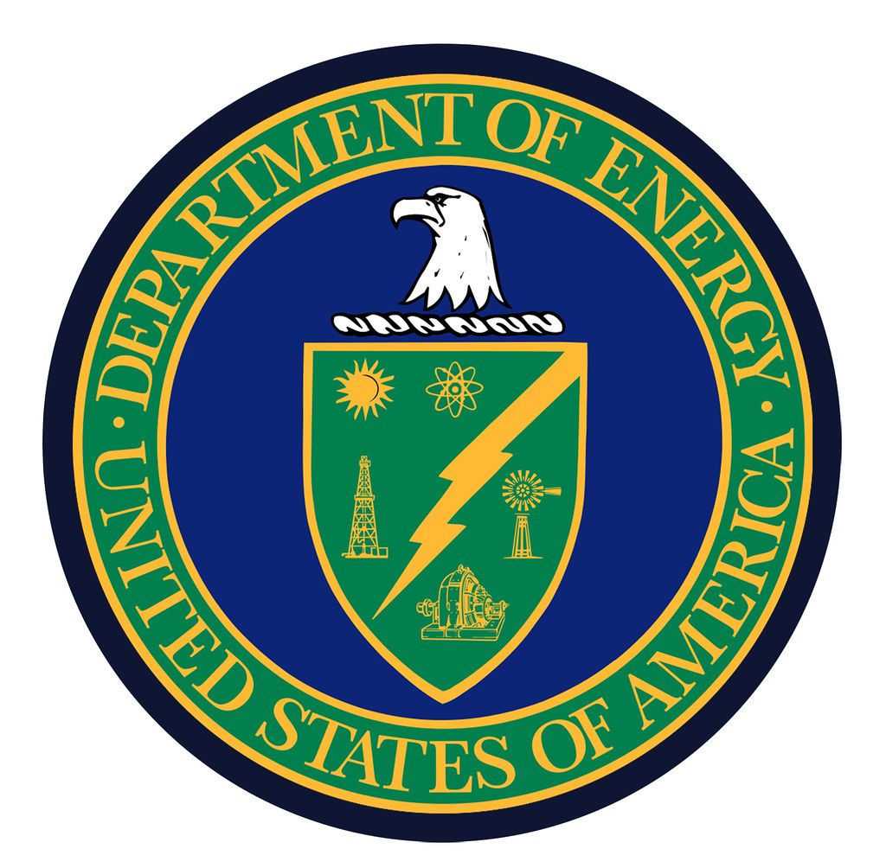

| Home | Sources | Quiz |
| Home | Sources | Quiz |

The mission of the Energy Department is to protect America's security and prosperity by addressing and managing challenges relating to clean energy, environmental and nuclear energy through innovative science and technology solutions. The DOE future of the focuses on creating new clean energy infrastructure and economy.
Activated on October 1, 1977, the twelfth cabinet-level department brought together for the first time within one agency two programmatic traditions
that had long coexisted within the federal establishment:
1) DOE responsibilities include the design, construction, and testing of nuclear weapons dating from the Manhattan Project effort to build the atomic bomb during World War II and
2) A loosely knit amalgamation of energy-related programs scattered throughout the federal government.
The Department of Energy's budget is allocated to conservation of energy, emergency energy preparedness, and the energy supply.
The U.S. Department of Energy (DOE) is one of the most interesting and diverse agencies in the federal government. Although only in existence since 1977, the Department traces its lineage to the Manhattan Project effort to develop the atomic bomb during World War II and to the various energy-related programs that previously had been dispersed throughout various federal agencies.
The Department of Energy focuses on finding better forms of clean, non-polluting froms of energy production. The Energy Department promotes transition to cleaner and more secure energy by increasing economic opportunity for the invention, manufacturing, and export of new forms of clean energy.
| Secretary of Energy at The.Secretary@hq.doe.gov | |
|---|---|
| Phone | 202-586-5000 |
| Fax | 202-586-4403 |
| U.S. Department of Energy 1000 Independence Ave., SW Washington, DC 20585 |